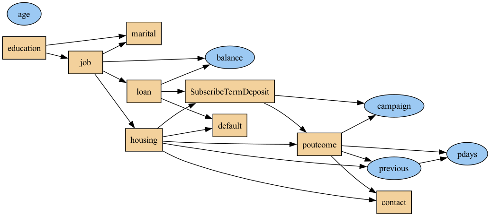
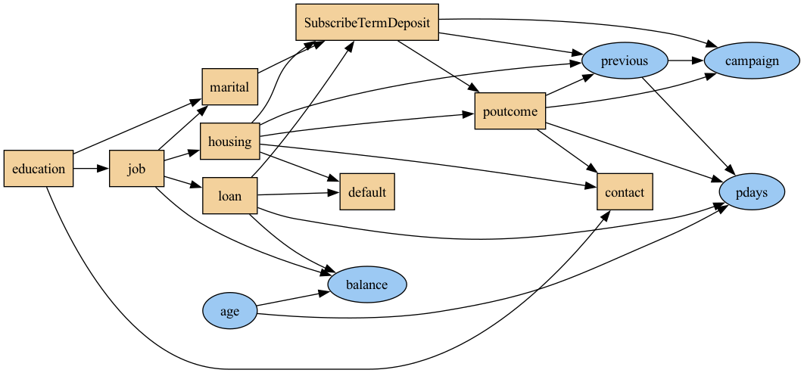
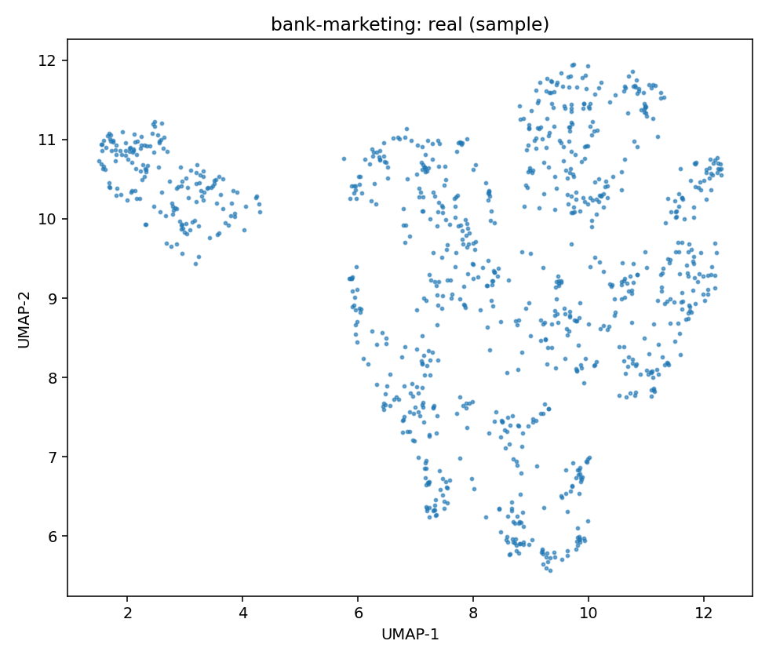
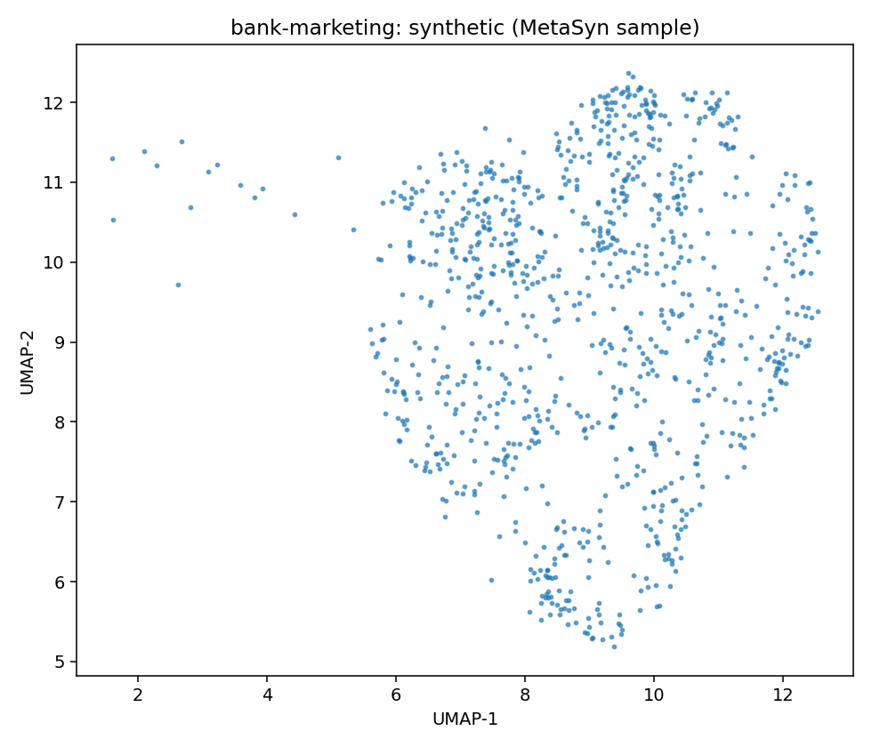
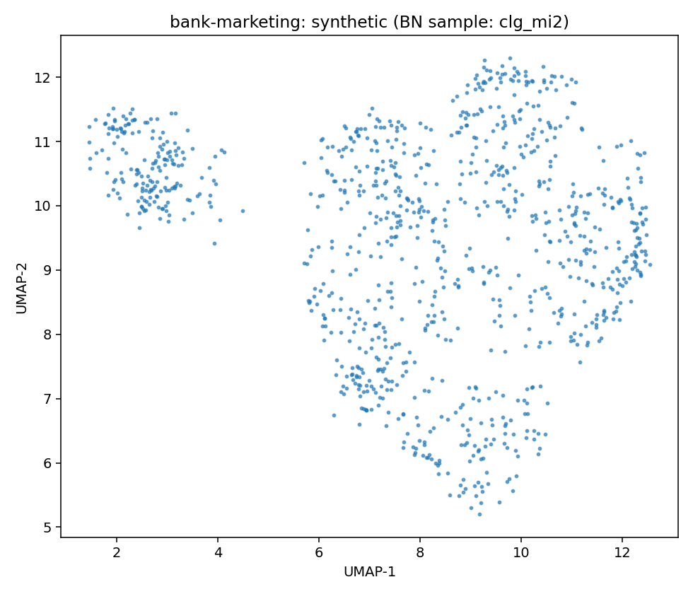
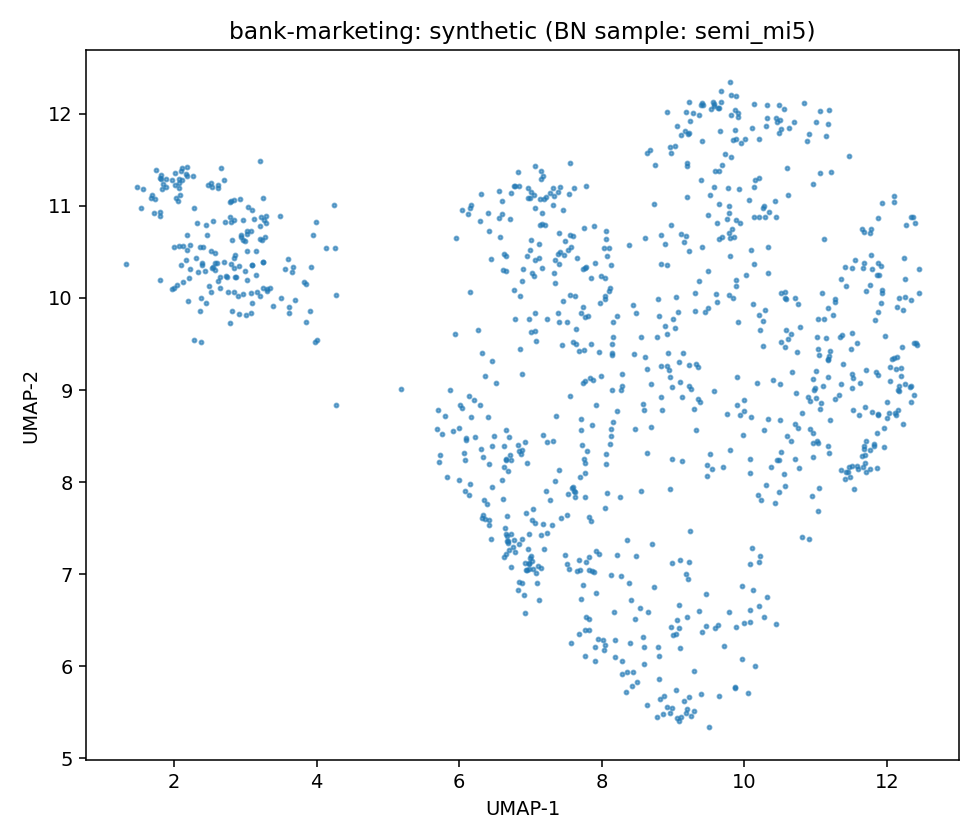

Source: OpenML dataset 46910
This dataset was curated for TabArena by the TabArena team as part of the TabArena Tabular ML IID Study. For more details on the study, see our paper.
Dataset Focus: This dataset shall be used for evaluating predictive machine learning models for independent and identically distributed tabular data. The intended task is classification.
We further remove the "month" and "day_of_week" features, as they also relate to the last contact -- which is not available in a real-world scenario.
Creators: See original data source.
| variable | inferred | count | unique | top | freq | mean | std | min | 25% | 50% | 75% | max |
|---|---|---|---|---|---|---|---|---|---|---|---|---|
| age | continuous | 45211 | 40.93621021432837 | 10.618762040975485 | 18.0 | 33.0 | 39.0 | 48.0 | 95.0 | |||
| job | discrete | 45211 | 12 | blue-collar | 9732 | |||||||
| marital | discrete | 45211 | 3 | married | 27214 | |||||||
| education | discrete | 45211 | 4 | secondary | 23202 | |||||||
| default | discrete | 45211 | 2 | no | 44396 | |||||||
| balance | continuous | 45211 | 1362.2720576850766 | 3044.765829168626 | -8019.0 | 72.0 | 448.0 | 1428.0 | 102127.0 | |||
| housing | discrete | 45211 | 2 | yes | 25130 | |||||||
| loan | discrete | 45211 | 2 | no | 37967 | |||||||
| contact | discrete | 45211 | 3 | cellular | 29285 | |||||||
| campaign | continuous | 45211 | 2.763840658246887 | 3.0980208832796765 | 1.0 | 1.0 | 2.0 | 3.0 | 63.0 | |||
| pdays | continuous | 45211 | 40.19782796222158 | 100.12874599062957 | -1.0 | -1.0 | -1.0 | -1.0 | 871.0 | |||
| previous | continuous | 45211 | 0.5803233726305546 | 2.30344104493196 | 0.0 | 0.0 | 0.0 | 0.0 | 275.0 | |||
| poutcome | discrete | 45211 | 4 | unknown | 36959 | |||||||
| SubscribeTermDeposit | discrete | 45211 | 2 | no | 39922 |
MetaSyn GMF: metasyn_gmf.json
| param | value |
|---|---|
| bn_type | clg |
| score | bic |
| operators | ['arcs'] |
| max_indegree | 2 |
| seed | 42 |

Serialization
| param | value |
|---|---|
| bn_type | semiparametric |
| score | bic |
| operators | ['arcs'] |
| max_indegree | 5 |
| seed | 42 |

Serialization
| model | mean_loglik | std_loglik | sum_loglik | disc_jsd_mean | disc_jsd_median | cont_ks_mean | cont_w1_mean |
|---|---|---|---|---|---|---|---|
| BN:clg_mi2 | -25.1747 | 198.1935 | -227654.9385 | 0.0153 | 0.0103 | 0.2951 | 284.918 |
| BN:semi_mi5 | -70.1978 | 4601.4407 | -634728.935 | 0.0204 | 0.0162 | 0.3006 | 289.255 |
| MetaSyn | 0.0206 | 0.0114 | 0.4702 | 331.213 |
| JSD | KS | W1 | ||||||||
|---|---|---|---|---|---|---|---|---|---|---|
| variable | type | clg_mi2 | semi_mi5 | MetaSyn | clg_mi2 | semi_mi5 | MetaSyn | clg_mi2 | semi_mi5 | MetaSyn |
| SubscribeTermDeposit | discrete | 0.0967 | 0.1257 | 0.0750 | 1.7204 | 1.7485 | 0.9360 | |||
| age | continuous | 0.0446 | 0.0446 | 0.0525 | ||||||
| balance | continuous | 0.0261 | 0.0261 | 0.0114 | ||||||
| campaign | continuous | 0.0162 | 0.0162 | 0.0306 | ||||||
| contact | discrete | 0.0070 | 0.0058 | 0.0027 | ||||||
| default | discrete | 0.2571 | 0.2479 | 0.2556 | 1413.3576 | 1435.0688 | 1612.1766 | |||
| education | discrete | 0.0103 | 0.0009 | 0.0086 | ||||||
| housing | discrete | 0.0094 | 0.0094 | 0.0090 | ||||||
| job | discrete | 0.0103 | 0.0139 | 0.0263 | ||||||
| loan | discrete | 0.2770 | 0.2630 | 0.3850 | 1.4294 | 1.4182 | 0.6508 | |||
| marital | discrete | 0.4296 | 0.4476 | 0.8176 | 7.7782 | 7.7073 | 41.6624 | |||
| pdays | continuous | 0.4150 | 0.4186 | 0.8176 | 0.3044 | 0.3323 | 0.6406 | |||
| poutcome | discrete | 0.0126 | 0.0357 | 0.0377 | ||||||
| previous | continuous | 0.0013 | 0.0306 | 0.0066 | ||||||
| Real (sample) | MetaSyn (synthetic) | BN: clg_mi2 | BN: semi_mi5 |
|---|---|---|---|
|  |  |  |  |